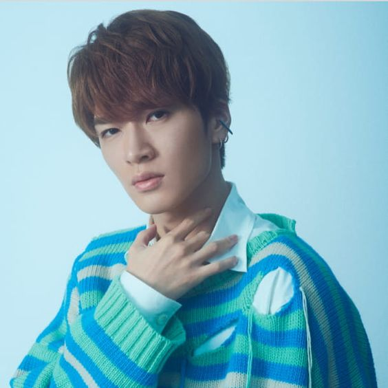
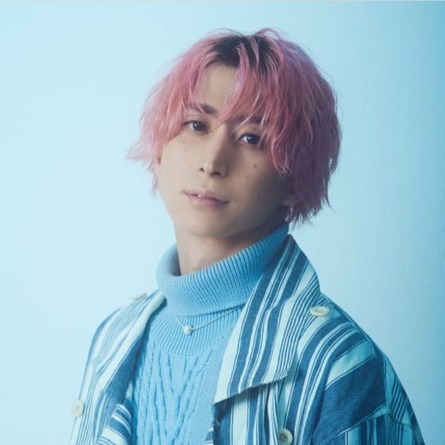

Nombre: 岩本照 (いわもと ひかる)
Nombre (romaji): Iwamoto Hikaru
Apodos: Gan-chan (がんちゃん), Iwamocchan (いわもっちゃん)
Profesión: Actor, Cantante y Bailarín
Fecha de nacimiento: 17-Mayo-1993 (28 Años)
Lugar de nacimiento: Prefectura de Saitama, Japón
Estatura: 182 cm
Tipo de sangre: A
Signo zodiacal: Tauro
Familia: Padres, una hermana (4 años menor) y un hermano (8 años menor)
Agencia: Johnny & Associates

TATSUYA FUKAZAWA
Nombre: 深澤 辰哉 (ふかざわ たつや)
Nombre (romaji): Fukasawa Tatsuya
Apodos: Fukka (ふっか)
Profesión: Actor, Cantante y Bailarín
Fecha de nacimiento: 05-Mayo-1992 (30 Años)
Lugar de nacimiento: Tokio, Japón
Estatura: 174 cm
Tipo de sangre: B
Signo zodiacal: Tauro
Agencia: Johnny & Associates

SAKUMA DAISUKE
Nombre: 佐久間大介 (さくま だいすけ)
Nombre (romaji): Sakuma Daisuke
Apodos: Sakkun (さっくん), Kuma-san (くまさん)
Profesión: Cantante, Bailarín y Actor
Fecha de nacimiento: 05-Julio-1992 (29 Años)
Lugar de nacimiento: Tokio, Japón
Estatura: 168 cm
Tipo de sangre: O
Signo zodiacal: Cáncer
Agencia: Johnny & Associates